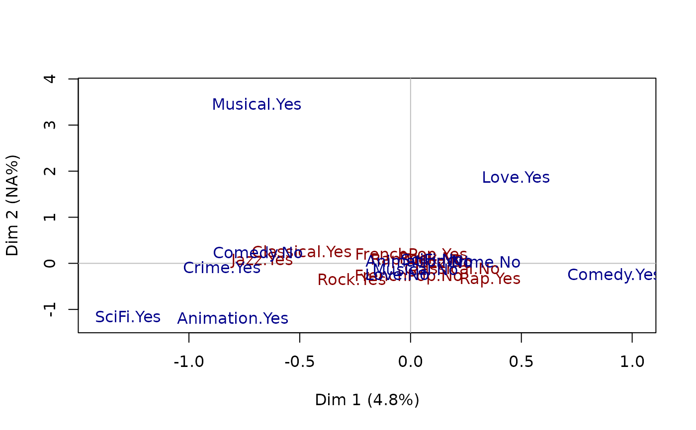
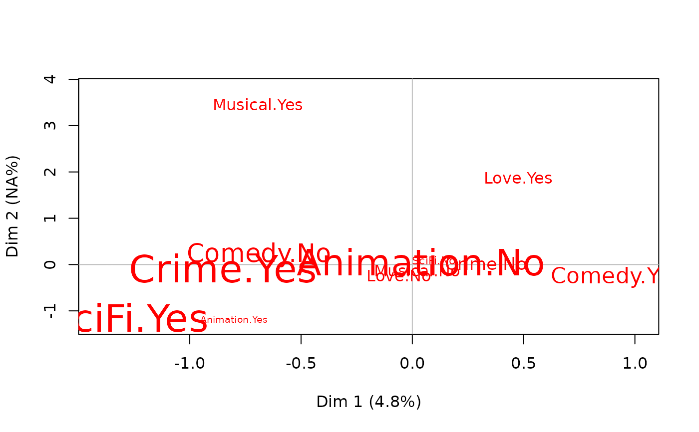

plot.multiMCA.RdPlots Multiple Factor Analysis data, resulting from multiMCA function.
# S3 method for multiMCA plot(x, type = "v", axes = c(1, 2), points = "all", threshold = 2.58, groups = 1:x$call$ngroups, col = rainbow(x$call$ngroups), app = 0, ...)
| x | object of class |
|---|---|
| type | character string: 'v' to plot the categories (default), 'i' to plot individuals' points, 'inames' to plot individuals' names |
| axes | numeric vector of length 2, specifying the components (axes) to plot (c(1,2) is default) |
| points | character string. If 'all' all points are plotted (default); if 'besth' only those who are the most correlated to horizontal axis are plotted; if 'bestv' only those who are the most correlated to vertical axis are plotted; if 'best' only those who are the most coorelated to horizontal or vertical axis are plotted. |
| threshold | numeric value. V-test minimal value for the selection of plotted categories. |
| groups | numeric vector specifying the groups of categories to plot. By default, every groups of categories will be plotted |
| col | a color for the points of the individuals or a vector of colors for the labels of the groups of categories (by default, rainbow palette is used) |
| app | numerical value. If 0 (default), only the labels of the categories are plotted and their size is constant; if 1, only the labels are plotted and their size is proportional to the weights of the categories; if 2, points (triangles) and labels are plotted, and points size is proportional to the weight of the categories. |
| ... | further arguments passed to or from other methods, such as cex, cex.main, ... |
A category is considered to be one of the most correlated to a given axis if its test-value is higher then 2.58 (which corresponds to a 0.05 threshold).
Escofier, B. and Pages, J. (1994) "Multiple Factor Analysis (AFMULT package)". Computational Statistics and Data Analysis, 18, 121-140.
Nicolas Robette
multiMCA, textvarsup, speMCA, csMCA, MFA
## Performs a specific MCA on music variables of 'Taste' example data set, ## another one on movie variables of 'Taste' example data set, ## and then a Multiple Factor Analysis and plots the results. data(Taste) mca1 <- speMCA(Taste[,1:5],excl=c(3,6,9,12,15)) mca2 <- speMCA(Taste[,6:11],excl=c(3,6,9,12,15,18)) mfa <- multiMCA(list(mca1,mca2)) plot.multiMCA(mfa,col=c('darkred','darkblue'))plot.multiMCA(mfa,groups=2,app=1)